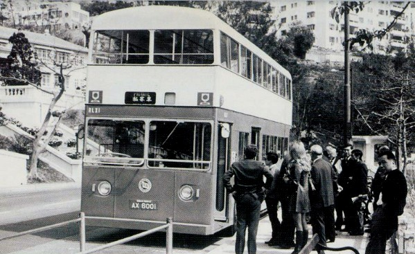
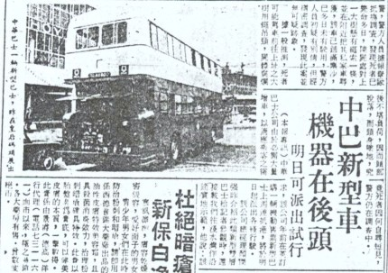
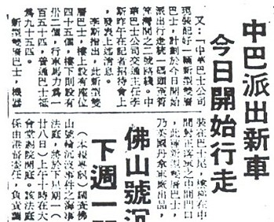
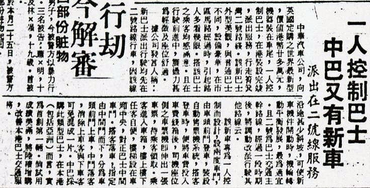
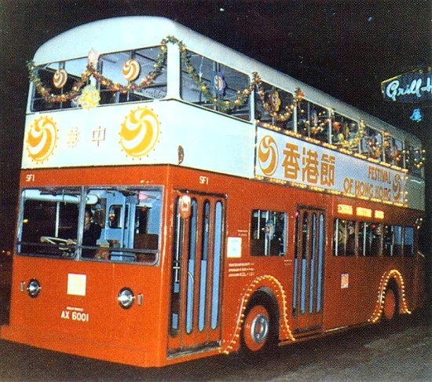
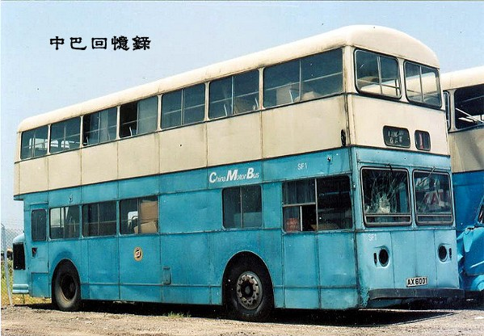
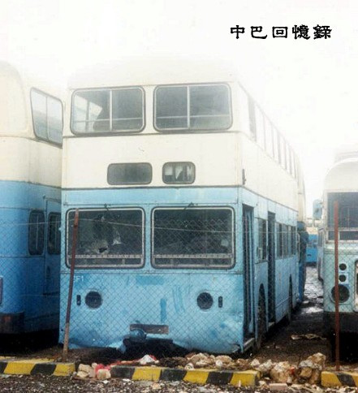

踏入70年代，可說是中巴光輝的一年。1971年，正當海底隧道工程進展得如火如荼之際，政府聯同兩間專利巴士公司----九巴及中巴，研究開辦過海巴士路線的可行性。這個劃時代的工程，可說為兩巴帶來不可多得的良機，除了令兩巴的網絡得以擴展至對岸外，隧道巴士亦為乘客帶來直接、省時的快捷旅程。就在隧道路線尚未完全落實之時，中巴突然於1971年底的股東年會中，向股東及新聞界宣佈已訂購了一部新型的雙層巴士，特別之處是機器設於車尾部份。這部新車，正是本文的主角------RLX1。
在介紹這部新巴士之前，先說一些題外話。RLX1的出現，可說是中巴用心良苦的心血結晶。自從60年代，中巴購買第一部雙層巴士開始，中巴一直為覓尋高載客量的巴士而煩惱。早於1970年，中巴計劃重建車隊內的「長龍」時，已考慮保留其35呎9吋的長度，重建成一批「超長雙層巴士」。不過，構思卻遭GUY的工程師反對，這批「長龍」的長度只好被縮短至30呎作重建。同年，中巴有意向GUY購買一款長度達36呎的"Arab
VI"(阿拉伯六型)三軸雙層巴士。根據廠方提供的數據，假如下層車箱是以企位為主，將可載客超過190人﹗南非一巴士公司早於1965年已購入「阿拉伯六型」於當地行走，載客量為175人，不過當滿載時，巴士的表現實在強差人意，此購買計劃被迫放棄。
70年代初期，面對著「佳牌」阿拉伯五型全面停產，而乘客量又持續上升，中巴只好尋求其他車源。中巴一方面把單層的「阿拉伯五型」重建成雙層巴士，另一方面從英國引入二手雙層巴士應急。除了車隊雙層化計劃外，中巴還展開了一人控制計劃。

RLX1，成為全港首輛雙層後置引擎巴士，設計完全配合一人控制模式，可見中巴的大膽嘗試。圖為RLX1出廠首日，中巴邀請一眾貴賓試乘新車，開往淺水灣。(圖片摘至《香港珍寶巴士》)
一人控制計劃的概念，是源自英國於1968年實行的一個新的巴士營運方式。從當年開始，適合作一人控制的後置引擎巴士已成為一個新趨勢，傳統的前置引擎巴士，只有陸續停產。此外，英國政府於1968年提出一個津貼計劃，資助英國本土的巴士公司購買後置引擎新車，這樣一來，巴士公司反正有政府資助，便紛紛訂購新車，車廠亦乘機加價，並停止前置引擎巴士的生產線，以騰空作生產後置引擎新車之用。
這個新政策可真的苦了香港的巴士公司。首先，巴士公司無法購入前置引擎新車，就算跟隨大氣候，購買後置引擎巴士，巴士公司亦因沒有政府津貼，而迫著要「捱貴車」。
1971年，在中巴剛展開一人控制計劃及於戰後首次提出加價之時，中巴決定向英國Daimler「丹拿」購入一部在英國十分流行的後置引擎雙層巴士，型號為Fleetline
CRG6-30。其「C」字代表Chassis(底盤)、「R」代表Rear
Engine(後置引擎)、「G」代表Gardner引擎、「6」代表6LX引擎、「30」則代表底盤長度為30呎。
這不得不說是中巴大膽創新的嘗試。首先，巴士的引擎設於尾部，這對香港來說，已是一個革新的設計，這不但能節省空間，提高載客量，車門也可以設於前車軸之前，恰好位於駕駛席旁，隨了適合一人控制模式的運作外，也可讓司機直接觀察及照顧乘客登車的過程及秩序。
此外，由於引擎與波箱都擺放於車尾，且位於尾軸後方，與中巴傳統使用的半艙式產品不同----引擎位於前車軸之間。此設計隨了能方便日常維修外(尤其是引擎及波箱)，亦由於尾輪為孖胎設計，更能負擔起車尾機器的重量。與此同時，由於後置引擎可直接驅動尾軸，與往日前置引擎的傳統設計比較，省卻了底盤上長長的驅動軸，因此能夠做出不帶梯級、平坦的地台，甚至不帶梯級的登車地台。
中巴為新巴士選取了熟識的Metal
Section車身，並以散件形式運往香港，在中巴的渣華車廠裝嵌。車身為Metal
Section全新設計，前門及中門均探用四摺闊門，原意為縮短乘客登車的時間，這當然與日後中巴的標準有著明顯的分別。初期營運時，中巴發現寬闊的前門設計讓司機難以控制乘客登車的秩序，因此中巴很快便把前門的右半摺鎖死，後來索性在登車位置安裝一特別的扶手柱，引導乘客往車頭的錢箱位置，直到退役。為配合一人控制，新車投入之初，安裝了一台機動售票機在錢箱旁。
此外，新車也帶來了很多新的標準，不但是中巴內首次出現，也是全港首創﹕
1.巴士的車身闊度從以往傳統的7呎11吋(2.39米)
(法定極限為8米)，增加至8呎2吋半(2.5米)
，己超出了香港的法例規定，因此要先向運輸署長申請許可證，才能發牌；
2.以往香港的雙層巴士，連接下層及上層的樓梯，其方向是由車頭向車尾的。而RLX1的設計，樓梯方向則從車尾走向車頭。這個新設計，能夠減少乘客受傷的機會，此設計在日後亦成為一個新的標準，為各大巴士公司普遍採用；
3.巴士的車門放棄使用電動開關，而改為全風式開關；
4.由於一人控制計劃展開後，上層車箱經常發生搶劫事件，且缺少了售票員，上層的秩序難以維持，因此新巴士的上層車箱設有潛望鏡，能夠讓司機在駕駛途中觀察上層車箱的情況。
新車裝嵌成型後，新車長度為31呎，闊度為8呎2吋半，而高度則為14呎2吋，與矮車身的LS高度一樣。全車座椅以2+2型式及木板靠背出現，載客量為上層45人、下層座位32人及企位21人，總載客量為98人。巴士配備馬力達150匹的「吉拿」Gardner
6LX引擎，配上「丹拿」Daimler出品的Daimatic
MKI 半自動波箱。但由於中巴計劃新巴士初期投入服務，仍會限於市區服務，因此引擎的最高馬力被限制至95匹，以減低廢氣排放及節省燃料。
中巴為新巴士編制為RLX1(Rear
Engine Gardner 6LX)，車牌為AX6001，這是運輸署首次未有預留車牌編號給專利巴士公司的做法。以往兩間巴士公司的巴士車牌，都會由運輸處預留，如AC、AD、AH等。但從RLX1開始，運輸處把專利巴士的車牌也改為與其他車輛一起統一分配。
「中巴新型車
機器在後頭」、「中巴又有新車
一人控制巴士」……。這是1972年2月22日，中巴廣邀各大傳媒及政府部門代表於中環皇后碼頭，參加新巴士RLX1交接儀式及試乘活動後的報導。當日出席交接儀式的，包括中巴高層及「丹拿」巴士代理商天祥洋行的代表。當天祥洋行將新車車匙移交中巴副監理顏傑強先生手上時，標誌著本港的巴士服務正式邁向一個新里程。
|
 |
 |
|
1972年2月22日，在中環皇后碼頭空地前展出本文主角----RLX1，讓市民及傳媒參觀。 左上﹕星島日報(23-02-1972) 右上﹕明報(23-02-1972) 下﹕星島日報(28-02-1972) |
|
 |
|
於當日的「新車發佈會」上，新巴士自然成為新聞界的焦點，中巴副監理顏傑強先生及交通經理李斯(李日新)先生均向傳媒介紹新巴士的特別之處﹕
「此新型雙層巴士為現時世界最新型載客巴士，為歐洲以外第一輛面世，每輛約港幣廿一萬元，比較現時行駛中之巴士其成本高達雙倍多，可容乘客約一百名，如試用認為滿意，經董事會決定後，預算第一批訂購50輛。但已為倫敦公用巴士公司訂購數量逾二千輛，約需數年始能交足訂單，據說短期內未必能接國外訂單。」
「此種巴士的之優點其機器設於車尾，而非如現在路上行駛之舊式巴士裝在車頭位，特別適用於一人控制巴士，其上車門口在車頭，落車則在中間門對正樓梯位。巴士裝設有自動售票機系統，搭客由車頭前門登車，將車費投入車頭錢箱後，司機座位則之車票機則伸出一張車票，待搭客領取。司機位前裝有潛望鏡，可潛望樓上每一角落或有乘客在樓上企立，一目瞭然。」
交接儀式及發佈會結束後，巴士隨即停放在皇后碼頭廣場，讓賓客及市民一睹這款前所未見的新巴士。其後，中巴更安排貴賓賓客試乘新巴士，從中環開往淺水灣。巴士在市區馬路經過時，亮麗的車身和新穎的樣貌，吸引了不少途人的目光。
1972年2月23日，巴士正式投入服務，中巴特意安排新巴士行走2號線，來往中環統一碼頭與筲箕灣，因2號線途經的路線甚少斜坡，可讓新車的機件熱身，機件運轉平衡發展。新車亦曾行走15號線駛上山頂作試驗，可惜只有95匹的引擎在爬山方面實在是力不從心，因此後來的半年仍然是2號線的字軌車。
1972年8月，耗資三億二千萬港元的海底隧道正式落成並於8月2日舉行開幕儀式。這個龐大的道路工程，終於使港島九龍連成一體。根據計劃，海底隧道通車後，將會有三條隧道直通路線開辦，分別為101、102、103，並破天荒由中巴及九巴聯合經營，連接港九。兩巴都十分重視三條新路線的開辦，並設法購買新車投入海底隧道路線服務。RLX1作為中巴當時的「生招牌」，當然成為行走隧道路線的一份子，並率先在兩巴的海底隧道路線通車的剪綵儀式中露面。
隧道路線通車後，RLX1成為102號線中巴時段的「頭車」，與新近購入的LX及九巴的Daimler「丹拿」E型、F型並肩行走，成為當時隧道路線唯一一輛後置引擎巴士。
1973年，隨著中巴購入30輛「LF」
(Daimler Fleetline CRG6-33)後，長度較短的RLX1亦改編制為SF
(Short
Fleetline)系列，新編號為SF1。
隨著更多載客量更高的新巴士投入隧道線行走，RLX1於70年代末期從隧道路線退下來，並再次成為2號線的字軌車。

RLX1/SF1於70年代一度是中巴的「招牌車」，中巴經常派出參加公開活動。圖可見RLX1的編號已正式改為SF1。(圖片來源﹕HONG KONG BUSES VOL.1)
踏入80年代，SF1在車身上有多項的改動，如車頭號碼牌箱從單格式改為三格式，上下層擋風玻璃被更換了等等……但SF1仍然有著與其他珍寶成員很多的不同，如唯一一輛高度為14呎2吋及闊度為8呎2吋半的珍寶(Fleetline)、唯一一輛座椅以2+2型式編排的珍寶、唯一一輛車身左側沒有牌箱的珍寶等等……。
1988年，16年車齡的SF1正式退下火線，宣告退役，隨即擱置在柴灣車廠天台的一角，同一地方擱置的還有SF2、LX326、AM1。這三兄弟(SF1、SF2、LX326)隨後於1993年中被移往小西灣一中巴停車場(今福建中學)的角落擺放，位置亦被多次移動。1998年，中巴專營權結束之前數月，被擱置10年的SF1終於有了出路，與退役不久的LF34一起被一商人買入，準備將之修復作收藏用途。可惜的是，因種種原因，巴士修復了一半便告放棄，最後仍難逃被肢解的命運。

退役後的RLX1/SF1，於90年代一直擱置在小西灣車場內。

攝於1996年，經過多年的日曬雨淋，SF1車身上的藍色已嚴重退色，顯得倉老起來。
RLX1/SF1的出現，曾改寫中巴在本港交通運輸業的地位，並一度代表著中巴以領導者的姿態出現，亦造就了300多輛珍寶巴士在中巴車隊出現，成為多年來中巴車隊的主力型號。
這真是值得紀念、保留下來的巴士，可惜的是，香港確實缺少一班有志於保留古舊巴士的人，以至一款又一款代表著香港的成長、交通的變遷的巴士車種都難逃被肢解的命運，這是可惜的……反而海外人士，卻有對香港巴士情有獨鍾者，願意花更多的時間和金錢，替我們香港人去保留一些車種，難道我們以後要探訪這些70、80年代的巴士，都要千里迢迢跑去英國、澳洲去?